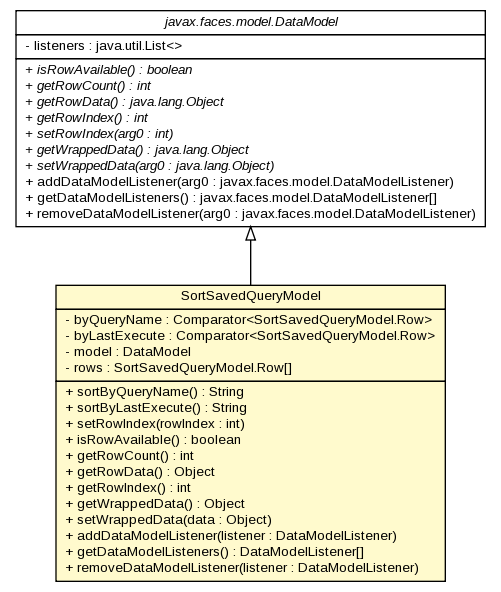

gov.nih.nci.ncia.datamodel
Class SortSavedQueryModel

java.lang.Object
 javax.faces.model.DataModel
gov.nih.nci.ncia.datamodel.SortSavedQueryModel
javax.faces.model.DataModel
gov.nih.nci.ncia.datamodel.SortSavedQueryModel
public class SortSavedQueryModel
- extends javax.faces.model.DataModel
| Methods inherited from class java.lang.Object |
clone, equals, finalize, getClass, hashCode, notify, notifyAll, toString, wait, wait, wait |
byQueryName
private static java.util.Comparator<SortSavedQueryModel.Row> byQueryName
byLastExecute
private static java.util.Comparator<SortSavedQueryModel.Row> byLastExecute
model
private javax.faces.model.DataModel model
rows
private SortSavedQueryModel.Row[] rows
SortSavedQueryModel
public SortSavedQueryModel(javax.faces.model.DataModel model)
sortByQueryName
public java.lang.String sortByQueryName()
sortByLastExecute
public java.lang.String sortByLastExecute()
setRowIndex
public void setRowIndex(int rowIndex)
- Specified by:
setRowIndex in class javax.faces.model.DataModel
isRowAvailable
public boolean isRowAvailable()
- Specified by:
isRowAvailable in class javax.faces.model.DataModel
getRowCount
public int getRowCount()
- Specified by:
getRowCount in class javax.faces.model.DataModel
getRowData
public java.lang.Object getRowData()
- Specified by:
getRowData in class javax.faces.model.DataModel
getRowIndex
public int getRowIndex()
- Specified by:
getRowIndex in class javax.faces.model.DataModel
getWrappedData
public java.lang.Object getWrappedData()
- Specified by:
getWrappedData in class javax.faces.model.DataModel
setWrappedData
public void setWrappedData(java.lang.Object data)
- Specified by:
setWrappedData in class javax.faces.model.DataModel
addDataModelListener
public void addDataModelListener(javax.faces.model.DataModelListener listener)
- Overrides:
addDataModelListener in class javax.faces.model.DataModel
getDataModelListeners
public javax.faces.model.DataModelListener[] getDataModelListeners()
- Overrides:
getDataModelListeners in class javax.faces.model.DataModel
removeDataModelListener
public void removeDataModelListener(javax.faces.model.DataModelListener listener)
- Overrides:
removeDataModelListener in class javax.faces.model.DataModel